Adders and Logic Circuits
Half adders
What is a half adder circuit?
- A half adder circuit is a basic digital circuit used in computation to perform the addition of two single bit numbers
- Has two inputs, usually labelled as A and B
- Produces two outputs labelled Carry out (C out) and Sum (s)
| A | B | C out | S |
|---|---|---|---|
| 0 | 0 | 0 | 0 |
| 0 | 1 | 0 | 1 |
| 1 | 0 | 0 | 1 |
| 1 | 1 | 1 | 0 |
| A AND B | A XOR B |
- Remember that you are adding together the binary numbers represented by A and B
- Create the C out column first then for each row you can just add A and B together and write the answer in 2 bits in the C out and S columns
- For example in row 2, A is 0 and B is 1 and 0+1=1, so 1 = 01 in 2 bits (C out 0, Sum 1)
- In the last row, A is 1 and B is 1 and 1+1=2, so 2 = 10 in 2-bit binary (C out 1, Sum 0)
Half adder Boolean expressions ★
- Sum
S = A XOR B = Ā·B + A·B̄ - Carry
C_out = A·B - The Sum output is the XOR gate and the Carry output is the AND gate
Drawing a half adder circuit
- A half adder has two inputs (A, B) and two outputs: the Sum (S) and Carry (C out)
- It is created using an XOR gate for the Sum output and an AND gate for the Carry output
- Label inputs: draw two lines on the left, label the top line A and the bottom line B
- XOR gate (Sum): connect A and B to the two inputs of an XOR gate; its output is the Sum (S)
- AND gate (Carry): connect A and B to the two inputs of an AND gate, drawn above the XOR gate; its output is the Carry (C out)
- The XOR gate is drawn as an OR-gate shape with an extra curved line on the input side; the AND gate is D-shaped
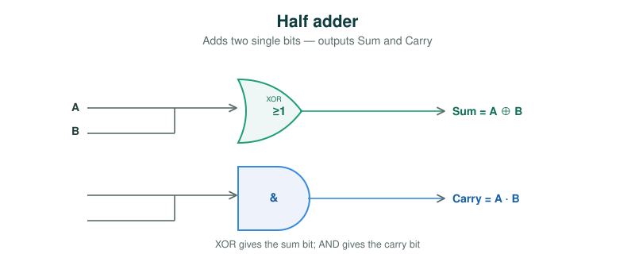
Full adders
What is a full adder circuit?
- A full adder circuit extends the half adder to handle the addition of three bits
- Has three inputs: A, B, and an input carry (C in)
- Produces two outputs: carry (C out) and sum (S)
| A | B | C in | C out | S |
|---|---|---|---|---|
| 0 | 0 | 0 | 0 | 0 |
| 0 | 0 | 1 | 0 | 1 |
| 0 | 1 | 0 | 0 | 1 |
| 0 | 1 | 1 | 1 | 0 |
| 1 | 0 | 0 | 0 | 1 |
| 1 | 0 | 1 | 1 | 0 |
| 1 | 1 | 0 | 1 | 0 |
| 1 | 1 | 1 | 1 | 1 |
- To reproduce this truth table easily:
- The full adder adds up three binary inputs A, B and Cin, so the answer can be 0, 1, 2 or 3
- For each row, add A, B and C and write the answer as a 2-bit binary number in the last two columns (C out and Sum)
- For example in row 4, A=0, B=1 and C=1: 0+1+1=2, which is 10 in binary, so C out is 1 and Sum is 0
- In the last row, A=1, B=1 and C=1: 1+1+1=3, which is 11 in binary, so C out is 1 and Sum is 1
Operation
- The “Sum” output provides the XOR of the inputs A, B and C in
- The “Carry” output is TRUE if at least two of the inputs A, B and C in are TRUE
Full adder Boolean expressions ★
- Sum
S = A XOR B XOR C_in - Carry
C_out = A·B + C_in·(A XOR B), which expands toC_out = A·B + A·C_in + B·C_in - The carry is 1 whenever at least two of the three inputs are 1
Drawing a full adder circuit
- A full adder has three inputs (A, B, C in) and two outputs (Sum S, Carry C out)
- It can be designed using two half adders and an OR gate
- Label inputs: draw three lines on the left, labelled A, B and C in
- First half adder: inputs A and B, consisting of an XOR gate (output Sum1) and an AND gate (output Carry1)
- Second half adder: inputs Sum1 and C in, consisting of an XOR gate (output S, the final Sum) and an AND gate (output Carry2)
- OR gate: connect Carry1 and Carry2 to an OR gate; its output is the final Carry (C out)
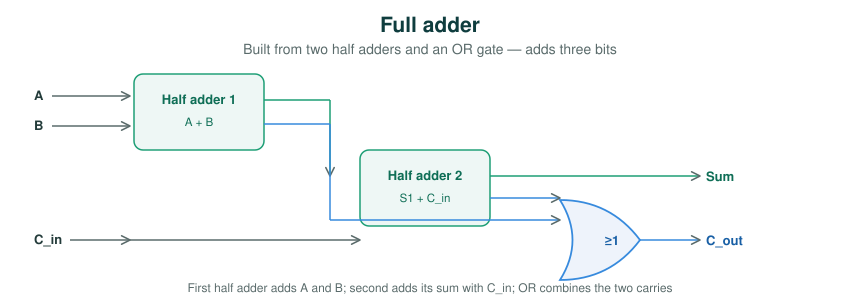
The diagram shows a logic circuit.

(a) Complete the truth table for the given logic circuit. Show your working. [3]
| A | B | C | P | Q | R | Y | Z |
|---|---|---|---|---|---|---|---|
| 0 | 0 | 0 | |||||
| 0 | 0 | 1 | |||||
| 0 | 1 | 0 | |||||
| 0 | 1 | 1 | |||||
| 1 | 0 | 0 | |||||
| 1 | 0 | 1 | |||||
| 1 | 1 | 0 | |||||
| 1 | 1 | 1 |
Inputs: A, B, C · Working space: P, Q, R · Outputs: Y, Z
(b) State the name of the logic circuit. [1]
© Write the Boolean expressions for the two outputs Y and Z in the truth table as sum-of-products and state the purpose of each output. [4]
Y = … ; Purpose …
Z = … ; Purpose …
Answer
7(a) One mark for working (all three columns P, Q and R) One mark for each correct column Y, Z
| A | B | C | P | Q | R | Y | Z |
|---|---|---|---|---|---|---|---|
| 0 | 0 | 0 | 0 | 0 | 0 | 0 | 0 |
| 0 | 0 | 1 | 0 | 0 | 0 | 1 | 0 |
| 0 | 1 | 0 | 1 | 0 | 0 | 1 | 0 |
| 0 | 1 | 1 | 1 | 0 | 1 | 0 | 1 |
| 1 | 0 | 0 | 1 | 0 | 0 | 1 | 0 |
| 1 | 0 | 1 | 1 | 0 | 1 | 0 | 1 |
| 1 | 1 | 0 | 0 | 1 | 0 | 0 | 1 |
| 1 | 1 | 1 | 0 | 1 | 0 | 1 | 1 |
Where: P = A XOR B, Q = A AND B, R = P AND C, Y = P XOR C, Z = Q OR R
7(b) Full adder 7© One mark for each point
Y = A̅B̅C + A̅BC̅ + AB̅C̅ + ABC Purpose: Sum bit
Z = A̅BC + AB̅C + ABC̅ + ABC Purpose: Carry output
A logic circuit has two inputs A and B, and two outputs E and F.

(a) Complete the truth table for this logic circuit. [2]
| INPUT | OUTPUT | ||
|---|---|---|---|
| A | B | E | F |
| 0 | 0 | ||
| 0 | 1 | ||
| 1 | 0 | ||
| 1 | 1 |
(b)(i) State the name of this logic circuit. [1] (b)(ii) State the purpose of each output E and F. [2]
Answer
| Question | Answer | Marks |
|---|---|---|
| 6a | 1 mark per correct output column | 2 |
| INPUT | OUTPUT | ||
|---|---|---|---|
| A | B | E | F |
| 0 | 0 | 0 | 0 |
| 0 | 1 | 1 | 0 |
| 1 | 0 | 1 | 0 |
| 1 | 1 | 0 | 1 |
| Question | Answer | Marks |
|---|---|---|
| 6b(i) | Half adder | 1 |
| 6b(ii) | • Purpose of E: Sum • Purpose of F: Carry |
2 |
Flip-Flops
What are SR and JK flip-flops?
- In A Level Computer Science, SR (Set-Reset) and JK flip-flops are digital memory components used in sequential circuits
- They store 1 bit of data and are commonly used in counters, control systems and synchronous logic
- They are both types of bistable circuit: they have two stable states, respond to clock signals and are often edge-triggered (typically on the rising edge)
SR flip-flop
- SR stands for Set and Reset; an SR flip-flop is commonly constructed using NOR gates (or NAND gates)
- Inputs: S = Set, R = Reset, CLK = Clock (when edge-triggered)
- Outputs: Q = current stored value, NOT(Q) = inverse of Q
SR flip-flop truth table (NOR logic, active-high inputs) ★
| S | R | Q (next state) | Description |
|---|---|---|---|
0 |
0 |
No change |
Memory / Hold |
0 |
1 |
0 |
Reset |
1 |
0 |
1 |
Set |
1 |
1 |
undefined | Forbidden — both Q and NOT(Q) driven to 0, so they are no longer complementary |
- For a NOR-based SR latch,
S = 1, R = 1drives both outputs low; when the inputs return to0, 0the final state cannot be predicted, so this combination must be avoided - In NAND-based designs the inputs are active-low, so the forbidden combination is
S = 0, R = 0(both outputs driven high)
SR flip-flop example
| Action | S | R | Q | NOT(Q) | Reasoning |
|---|---|---|---|---|---|
| Initially | 1 |
0 |
1 |
0 |
Set: S = 1 forces Q = 1 |
| S changed to 0 | 0 |
0 |
1 |
0 |
Memory mode: no change |
| R changed to 1 | 0 |
1 |
0 |
1 |
Reset: R = 1 forces Q = 0 |
| R changed to 0 | 0 |
0 |
0 |
1 |
Memory mode: Q holds |
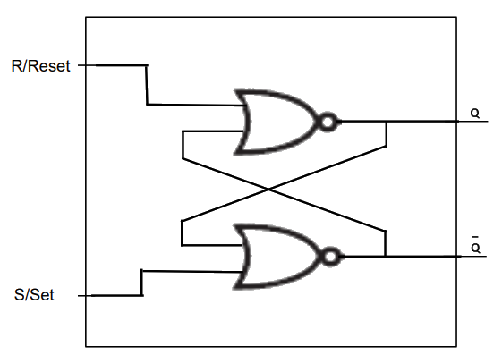
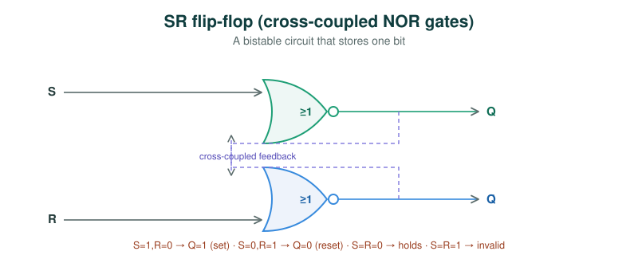
JK flip-flop
- The JK flip-flop is a more versatile version of the SR flip-flop; it solves the SR’s forbidden state
- Inputs: J = Set, K = Reset, CLK = Clock (required)
- Outputs: Q = current state, NOT(Q) = inverse
| Problem with SR | Why JK solves it |
|---|---|
| 1. S = 1 and R = 1 is forbidden | JK uses this condition to toggle the output instead |
| 2. Glitches from feedback loops | JK uses a clock to control the exact timing of changes |
JK flip-flop truth table
| J/Set | K/Reset | Q (next) | Description |
|---|---|---|---|
0 |
0 |
No change |
Memory / Hold |
0 |
1 |
0 |
Reset |
1 |
0 |
1 |
Set |
1 |
1 |
Toggle |
Q becomes NOT(Q) |
Building a JK flip-flop from an SR flip-flop
Jis ANDed withNOT(Q)into the Set input andKis ANDed withQinto the Reset inputJ = K = 1therefore feeds the two gates with opposite values and toggles the output instead of producing a forbidden state- SR built from NAND gates: two cross-coupled NAND gates use active-low inputs —
S = R = 1holds the stored bit,S = 0, R = 1sets it andS = R = 0is the forbidden combination
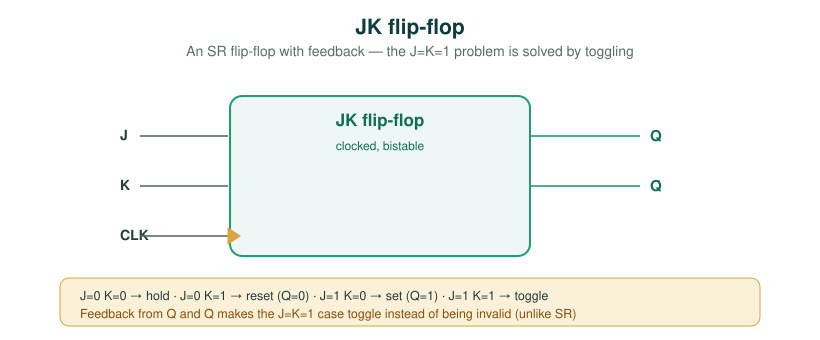
Purpose of a flip-flop ★
- The exam-tested wording is: to store a binary digit / (single) bit
- Flip-flops are the basic 1-bit storage elements used to build registers, counters and state machines
Use cases
| Flip Flop | Typical uses |
|---|---|
| SR | Simple memory, control circuits |
| JK | Toggles, counters, frequency dividers |
(a) Draw a logic circuit for an SR flip-flop and label the inputs. [4]

(b) State the purpose of a flip-flop. [1]
© Simplify the following expression using Boolean algebra, including De Morgan’s laws. Show your working. [3]
$$\overline{\overline{(\overline{A}.\overline{B})}.\overline{(\overline{A}.C)}.\overline{(B.D)}}$$
Answer
8(a) One mark for each point (Max 4)
- One correct NAND or NOR gate with two separate inputs and one output
- Second correct logic gate of same type as first with two separate inputs and one output
- Correct connections between logic gates
- Correctly labelled inputs
Example answers:

Or

8(b) To store a binary digit / (single) bit. 8© One mark for each point (Max 3)
- Correct application of De Morgan’s Law
- Correct application of Double Negation Law or Distributive Law
- Correct answer

Boolean Algebra
What is Boolean algebra?
- Boolean algebra is a mathematical system used to manipulate Boolean values
- Complex expressions can be made simpler using the rules of Boolean algebra
- It is a more powerful simplification method than Karnaugh maps and can simplify expressions that Karnaugh maps cannot
- Combining the rules can reduce complex expressions to much simpler ones
General rules
- General AND rules
- X AND 0 = 0
- X AND 1 = X
- X AND X = X
- NOT X AND X = 0
- General OR rules
- X OR 0 = X
- X OR 1 = 1
- X OR X = X
- NOT X OR X = 1
- Here X is unknown and is used as a placeholder; for example X AND 1 = X means the output is whatever value X holds
Further Boolean laws ★
- Idempotent law
X + X = XandX · X = X - Double negation
NOT(NOT X) = X - Distributive law
A·(B + C) = A·B + A·CandA + B·C = (A + B)·(A + C) - Absorption law
A + A·B = AandA·(A + B) = A - Complement / annulment laws are also used in simplification, e.g.
X·X̄ = 0,X + X̄ = 1,X·0 = 0,X + 1 = 1
Boolean algebra notation
| Symbol | Meaning | Example | Explanation |
|---|---|---|---|
A · B or AB |
AND | A · B |
True only if both A and B are 1 |
A + B |
OR | A + B |
True if either A or B is 1 |
¬A or A' |
NOT / complement | A̅ |
True if A is 0, False if A is 1 |
( ) |
Brackets / grouping | (A + B)·C |
Do A OR B first, then AND with C |
- A dot (
·) for AND is often omitted, soABmeansA AND B - A line drawn above a variable or expression means the value is inverted / negated, i.e. the NOT of that value
| Notation | Meaning | Explanation |
|---|---|---|
¬A or A' or A̅ |
NOT A | True if A is False, False if A is True |
A · B̅ |
A AND (NOT B) | B is negated before the AND operation |
(A + B)̅ |
NOT (A OR B) | The whole OR expression is negated (use De Morgan) |
(A · B · C)̅ |
NOT (A AND B AND C) | All values are ANDed, then the result is negated |
- When you see multiple horizontal lines, for example:
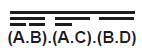
- The whole expression is negated, not just one part
- Always apply De Morgan’s Law starting with the outermost line first
De Morgan's Law
What is De Morgan's Law?
- De Morgan’s Laws simplify Boolean expressions involving negation of a conjunction (AND) or a disjunction (OR)
- They are particularly useful for rewriting logic circuits using only NAND or NOR gates
- The two key rules are:
- NOT (A AND B) is equivalent to (NOT A) OR (NOT B)
- NOT (A OR B) is equivalent to (NOT A) AND (NOT B)
Worked example 1: simplify ¬(A ∧ B)
| Step | Explanation | Expression |
|---|---|---|
| Step 1 | Start with the original expression | ¬(A · B) |
| Step 2 | Apply De Morgan: change ∧ to ∨ and negate both terms | ¬A ∨ ¬B |
| Step 3 | Remove unnecessary brackets | Ā + B̄ |
Worked example 2: simplify ¬(A ∨ B)
| Step | Explanation | Expression |
|---|---|---|
| Step 1 | Start with the original expression | ¬(A + B) |
| Step 2 | Apply De Morgan: change ∨ to ∧ and negate both terms | ¬A ∧ ¬B |
| Step 3 | Remove unnecessary brackets | Ā · B̄ |
De Morgan with three or more variables ★
NOT(A·B·C) = Ā + B̄ + C̄andNOT(A + B + C) = Ā·B̄·C̄— the rule is unchanged: swap AND with OR, then invert every term- Remove the outermost bar first: for
NOT(NOT(Ā·B̄) · NOT(Ā·C) · NOT(B·D))the outer bar turns the product into a sum,(Ā·B̄) + (Ā·C) + (B·D), and the inner bars are then cleared term by term
Why use De Morgan's Laws?
- Simplifying Boolean expressions using De Morgan’s Laws:
- Allows implementation using only NAND or NOR gates
- Makes circuit design more efficient and cost-effective
- Is essential in hardware where NAND/NOR logic is cheaper or faster to implement
- Is commonly used in microprocessor and memory device design (e.g. flash drives)
The truth table for a logic circuit is shown.
| INPUT A | INPUT B | INPUT C | INPUT D | OUTPUT T |
|---|---|---|---|---|
| 0 | 0 | 0 | 0 | 0 |
| 0 | 0 | 0 | 1 | 1 |
| 0 | 0 | 1 | 0 | 0 |
| 0 | 0 | 1 | 1 | 1 |
| 0 | 1 | 0 | 0 | 0 |
| 0 | 1 | 0 | 1 | 0 |
| 0 | 1 | 1 | 0 | 0 |
| 0 | 1 | 1 | 1 | 0 |
| 1 | 0 | 0 | 0 | 0 |
| 1 | 0 | 0 | 1 | 1 |
| 1 | 0 | 1 | 0 | 0 |
| 1 | 0 | 1 | 1 | 1 |
| 1 | 1 | 0 | 0 | 0 |
| 1 | 1 | 0 | 1 | 1 |
| 1 | 1 | 1 | 0 | 0 |
| 1 | 1 | 1 | 1 | 1 |
(a) Write the Boolean logic expression that corresponds to the given truth table as the sum-of-products. [3]
T =
(b) Complete the Karnaugh map (K-map) for the given truth table. [2]
| CD \ AB | 00 | 01 | 11 | 10 |
|---|---|---|---|---|
| 00 | ||||
| 01 | ||||
| 11 | ||||
| 10 |
© Draw loop(s) around appropriate group(s) in the K-map to produce an optimal sum-of-products. [2]
(d)(i) Write the Boolean logic expression from your answer to part © as the simplified sum-of-products. [2]
T =
(d)(ii) Use Boolean algebra to write your answer to part (d)(i) in its simplest form. [1]
T =
Answer
| Question | Answer | Marks |
|---|---|---|
| 7(a) | One mark for every two correct products (Max 3) • $(T =)\ \bar{A}.\bar{B}.\bar{C}.D + \bar{A}.\bar{B}.C.D + A.\bar{B}.\bar{C}.D + A.\bar{B}.C.D + A.B.\bar{C}.D + A.B.C.D$ |
3 |
| 7(b) | Two marks if no errors present; one mark if one error present. Completed K-map shown below. | 2 |
| 7© | One mark for each correct loop (Max 2) — see the mark scheme figure below. | 2 |
| 7(d)(i) | One mark for each mark point (Max 2) • Any correct Boolean term • Boolean terms and operator correct and no other terms present $(T =)\ A.D + \bar{B}.D$ // $\bar{B}.D + A.D$ |
2 |
| 7(d)(ii) | One mark for simplest form (Max 1) • $(T =)\ D.(A + \bar{B})$ |
1 |
Editorial note (not from the mark scheme): the published mark scheme prints D.(A . B̄) here, but part (d)(i) gives A.D + B̄.D. Factorising D yields D.(A + B̄), so the + is used above. Verify against the original MS if your centre follows it literally.
7(b) Completed K-map (CD down the rows, AB across the columns):
| CD \ AB | 00 | 01 | 11 | 10 |
|---|---|---|---|---|
| 00 | 0 | 0 | 0 | 0 |
| 01 | 1 | 0 | 1 | 1 |
| 11 | 1 | 0 | 1 | 1 |
| 10 | 0 | 0 | 0 | 0 |
7© Loops:
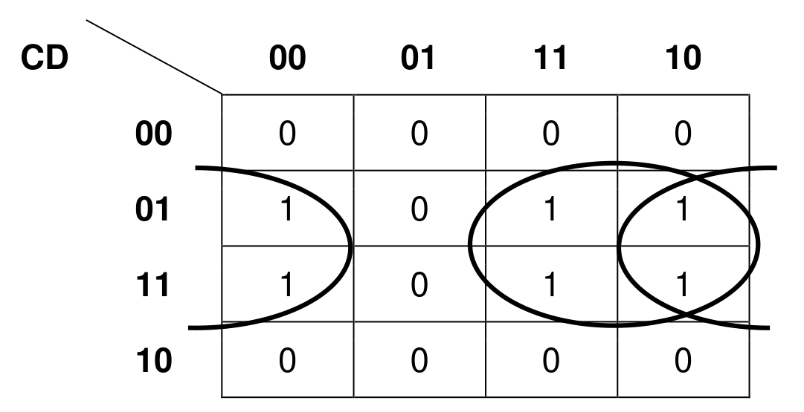
This truth table represents a logic circuit.
| A | B | C | D | Z |
|---|---|---|---|---|
| 0 | 0 | 0 | 0 | 1 |
| 0 | 0 | 0 | 1 | 1 |
| 0 | 0 | 1 | 0 | 1 |
| 0 | 0 | 1 | 1 | 1 |
| 0 | 1 | 0 | 0 | 0 |
| 0 | 1 | 0 | 1 | 0 |
| 0 | 1 | 1 | 0 | 1 |
| 0 | 1 | 1 | 1 | 1 |
| 1 | 0 | 0 | 0 | 0 |
| 1 | 0 | 0 | 1 | 0 |
| 1 | 0 | 1 | 0 | 0 |
| 1 | 0 | 1 | 1 | 0 |
| 1 | 1 | 0 | 0 | 0 |
| 1 | 1 | 0 | 1 | 0 |
| 1 | 1 | 1 | 0 | 0 |
| 1 | 1 | 1 | 1 | 0 |
(a) Write the Boolean logic expression that corresponds to the given truth table as the sum-of-products. [3]
(b) Complete the Karnaugh map (K-map) for the given truth table. [2]
| AB\CD | 00 | 01 | 11 | 10 |
|---|---|---|---|---|
| 00 | ||||
| 01 | ||||
| 11 | ||||
| 10 |
© Draw loop(s) around appropriate group(s) in the K-map to produce an optimal sum-of-products. [2]
(d) Write the Boolean logic expression from your answer to part © as a simplified sum-of-products. [2]
(e) Use Boolean algebra to give your answer to part (d) in its simplest form. [1]
Answer
| Question | Answer | Marks |
|---|---|---|
| 9(a) | One mark for every two correct products (Max 3) Z = A̅B̅C̅D̅ + A̅B̅C̅D + A̅B̅CD̅ + A̅B̅CD + A̅BCD̅ + A̅BCD |
3 |
| 9(b) | Two marks if no errors present One mark if one error present  |
2 |
| 9© | One mark for each correct loop (Max 2) |
2 |
| 9(d) | One mark for each mark point (Max 2) • Any correct Boolean term • Boolean terms and operator correct and no other terms present Z = A̅B̅ + A̅C |
2 |
| 9(e) | One mark for simplest form (Max 1) Z = A̅( B̅ + C ) |
1 |
(a) The Karnaugh map (K-map) represents a logic circuit with four inputs.
| AB\CD | 00 | 01 | 11 | 10 |
|---|---|---|---|---|
| 00 | 0 | 0 | 0 | 0 |
| 01 | 1 | 1 | 1 | 0 |
| 11 | 0 | 1 | 1 | 1 |
| 10 | 0 | 0 | 1 | 1 |
(a)(i) Draw loop(s) around appropriate group(s) in the K-map to produce an optimal sum-of-products. [3]
(a)(ii) Write the Boolean expression from your answer to part (a)(i) as a simplified sum-of-products. Do not carry out any further simplification. [2]
(b) Simplify the following expression using De Morgan’s laws and Boolean algebra. Show all the stages in your simplification. [3]
$X = \overline{A+B+C} + \overline{\overline{B}+C}$
Answer
6(a)(i) See the K-map with loops below — one mark for each correct loop (Max 3)
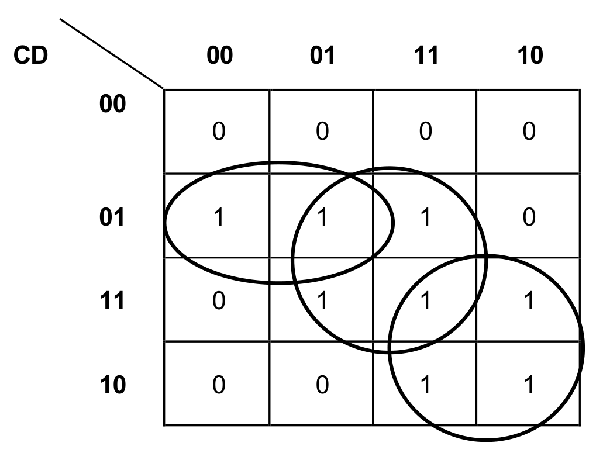
6(a)(ii) $\bar{A}.\bar{C}.D + B.D + A.C$ One mark for one correct Boolean term with an OR sign; one mark for all three correct Boolean terms connected by OR signs and no other terms present.
6(b) One mark for correct use of De Morgan’s laws One mark for correct use of any other Boolean algebra law
(X =) $\overline{A+B+C} + \overline{\overline{B}+C}$
(X =) $\bar{A}.\bar{B}.\bar{C} + \bar{\bar{B}}.\bar{C}$ (De Morgan’s)
(X =) $\bar{A}.\bar{B}.\bar{C} + B.\bar{C}$ (Double negation)
(X =) $\bar{C}.(\bar{A}.\bar{B} + B)$ (Distributive)
One mark for correct answer (X =) $\bar{C}.(\bar{A} + B)$ (Redundancy)
Karnaugh Maps
What is a Karnaugh map?
- A Karnaugh map (K-map) is a tool used for simplifying Boolean algebra expressions
- It offers a visual method of grouping together expressions with common factors
- The format of the map makes it easy to identify and eliminate redundant terms
- It is used in digital logic design, such as simplifying the logic of digital circuits
Steps
- Create the map: each cell corresponds to a term in the expression; fill cells with 1s and 0s matching the output
- Grouping: group the 1s in the grid. Each group must be a rectangle whose size is a power of 2. A cell may be part of multiple groups
- Simplifying: write a simplified expression for each group, using the variables that remain constant across the group
- Final expression: OR the simplified expressions from each group together
Benefits of a Karnaugh map ★
- Solving logic expressions using a K-map makes it easier because you do not need to use Boolean algebra
- It is guaranteed to give an optimal solution
- It converts complex logic problems into simpler ones
Creating Karnaugh Maps
- A K-map can simplify a Boolean expression with 2 inputs; here is an example for A OR B
- Step 1: add each variable starting with A across the top and B down the side, then add each possible state for A and B
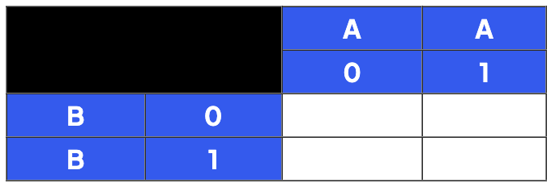
- Step 2: take each expression in turn separated by OR; first look at A on its own, find all cells where A is 1 and add a 1 to the cell
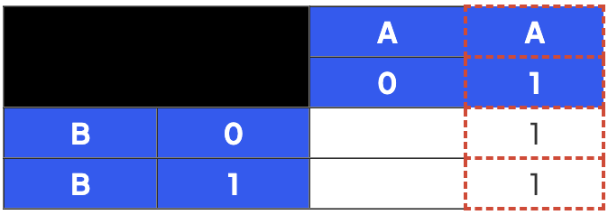
- Step 3: repeat for B
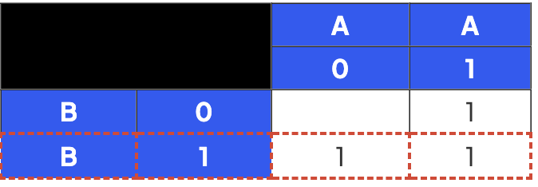
- Step 4: this is the completed K-map for A OR B
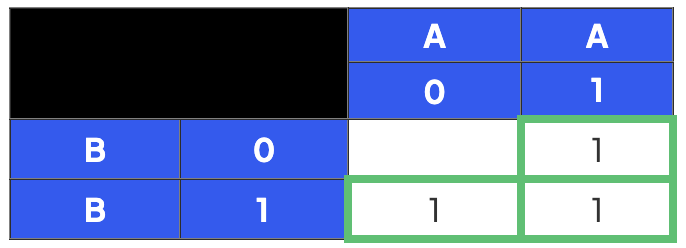
Simplifying expressions using Karnaugh Maps
- Simplify
¬A^¬B^C v ¬A^B^¬C v A^¬B^C v A^Busing a K-map; there are 3 variables A, B, C so the empty K-map is: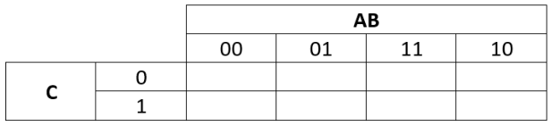
- Step 1: split the long term at each OR into 4 smaller expressions:
¬A^¬B^C,¬A^B^¬C,A^¬B^C,A^B - Step 2:
¬A^¬B^Cis true when A=0, B=0, C=1, so put a 1 in every cell where A is 0, B is 0 and C is 1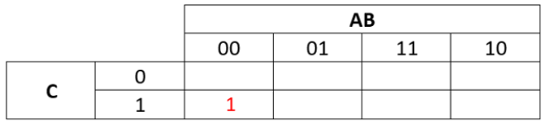
- Step 3:
¬A^B^¬C— put a 1 where A is 0, B is 1 and C is 0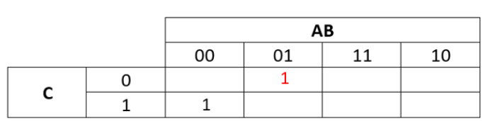
- Step 4:
A^¬B^C— put a 1 where A is 1, B is 0 and C is 1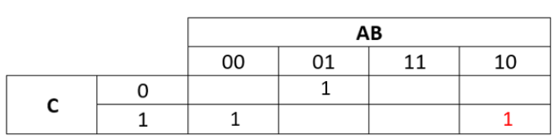
- Step 5:
A^B— put a 1 where A is 1 and B is 1 (this covers 2 cells)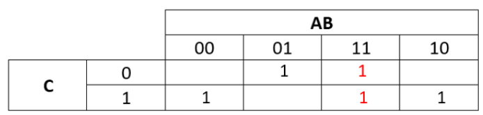
Making the groups
- Once the 1s and 0s are written in, the K-map can be used to simplify the expression by identifying the groups — this is the key step
- The aim is to:
- Make rectangular groups
- Make groups that are as large as possible
- Make groups containing 8, 4, 2 or 1 ones
- Allow groups to overlap (a one may be in multiple groups)
- Remember the grid wraps round in all directions, so groups can wrap around
Rules that decide the final expression ★
- Every 1 must be covered — each 1 lies in at least one group; groups may overlap, and a group of 2ⁿ cells removes the n variables that change across it
- Don’t care terms — cells marked X are input combinations that cannot occur; they may be treated as 1 to enlarge a group, or left alone if that gives fewer terms
- Grouping the 0s — looping the 0s instead of the 1s produces a product-of-sums expression, with each variable inverted relative to its constant value inside the group
Example grouping
- Group 1: this group represents A, since within it both C and B change (have zeros and ones) whereas for A all cells are one
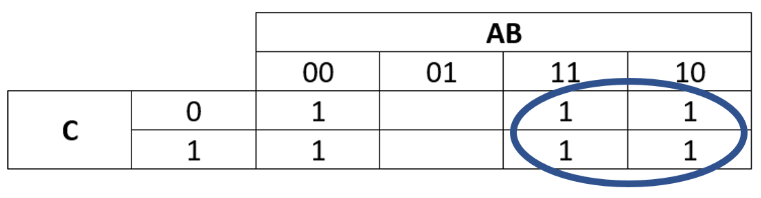
- Group 2: this group represents ¬B (note the wrapping around), since within it both A and C change whereas for B all cells are zero
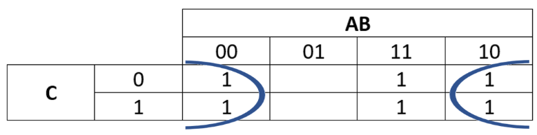
- Final simplified expression: OR the terms for the two groups together, giving A v ¬B
- In questions where you have to use a K-map, always show the groups by drawing a box/circle round them
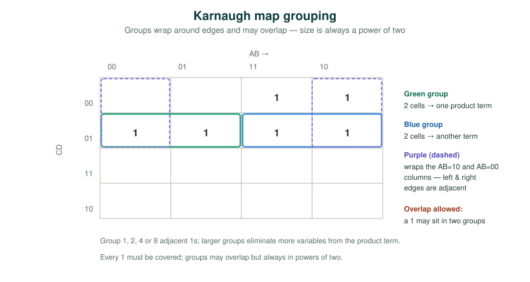
The diagram shows a logic circuit.
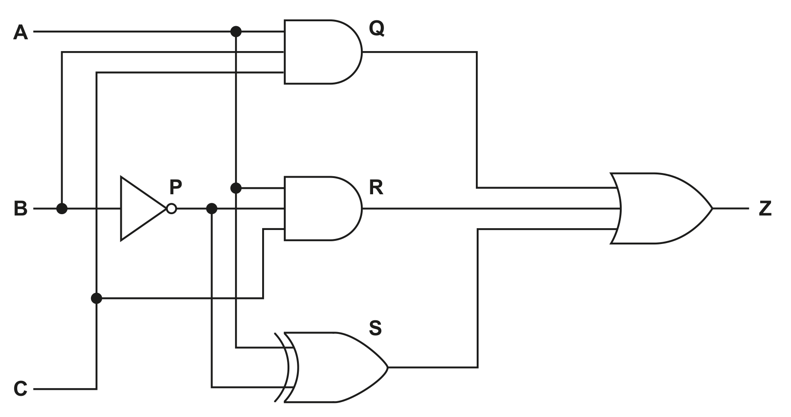
(a) Complete the truth table for the given logic circuit. Show your working. [3]
| A | B | C | P | Q | R | S | Z |
|---|---|---|---|---|---|---|---|
| 0 | 0 | 0 | |||||
| 0 | 0 | 1 | |||||
| 0 | 1 | 0 | |||||
| 0 | 1 | 1 | |||||
| 1 | 0 | 0 | |||||
| 1 | 0 | 1 | |||||
| 1 | 1 | 0 | |||||
| 1 | 1 | 1 |
(b) Write the Boolean expression that corresponds to the logic circuit as a sum-of-products. [2]
Z =
©(i) Complete the Karnaugh map (K-map) for the Boolean expression: [2]
$Z = \bar{A}.\bar{B}.\bar{C} + \bar{A}.\bar{B}.C + A.\bar{B}.\bar{C} + A.\bar{B}.C + A.B.\bar{C} + A.B.C$
| A \ BC | 00 | 01 | 11 | 10 |
|---|---|---|---|---|
| 0 | ||||
| 1 |
©(ii) Draw loop(s) around appropriate group(s) in the K-map to produce an optimal sum-of-products. [2]
©(iii) Write the Boolean expression from your answer to part ©(ii) as a simplified sum-of-products. [1]
Z =
Answer
| Question | Answer | Marks |
|---|---|---|
| 6(a) | One mark for working (all four columns P, Q, R and S); one mark for first four rows of column Z; one mark for second four rows of column Z. Completed truth table shown below. |
3 |
| 6(b) | Two marks for all five correct terms and no extras; one mark for any three correct terms. • $(Z =)\ \bar{A}.\bar{B}.\bar{C} + \bar{A}.\bar{B}.C + A.\bar{B}.C + A.B.\bar{C} + A.B.C$ |
2 |
| 6©(i) | Two marks if all correct; one mark if one error present. Completed K-map shown below. | 2 |
| 6©(ii) | One mark for each correct loop (Max 2) — see the mark scheme figure below. | 2 |
| 6©(iii) | $A + \bar{B}$ | 1 |
6(a) Completed truth table:
| A | B | C | P | Q | R | S | Z |
|---|---|---|---|---|---|---|---|
| 0 | 0 | 0 | 1 | 0 | 0 | 1 | 1 |
| 0 | 0 | 1 | 1 | 0 | 0 | 1 | 1 |
| 0 | 1 | 0 | 0 | 0 | 0 | 0 | 0 |
| 0 | 1 | 1 | 0 | 0 | 0 | 0 | 0 |
| 1 | 0 | 0 | 1 | 0 | 0 | 0 | 0 |
| 1 | 0 | 1 | 1 | 0 | 1 | 0 | 1 |
| 1 | 1 | 0 | 0 | 0 | 0 | 1 | 1 |
| 1 | 1 | 1 | 0 | 1 | 0 | 1 | 1 |
6©(i) Completed K-map:
| A \ BC | 00 | 01 | 11 | 10 |
|---|---|---|---|---|
| 0 | 1 | 1 | 0 | 0 |
| 1 | 1 | 1 | 1 | 1 |
6©(ii) Loops:
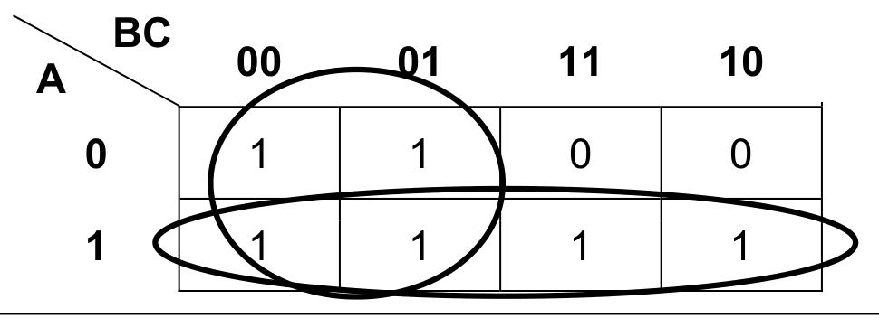
(a) The diagram shows a logic circuit. Complete the truth table for the given logic circuit. Show your working. [3]
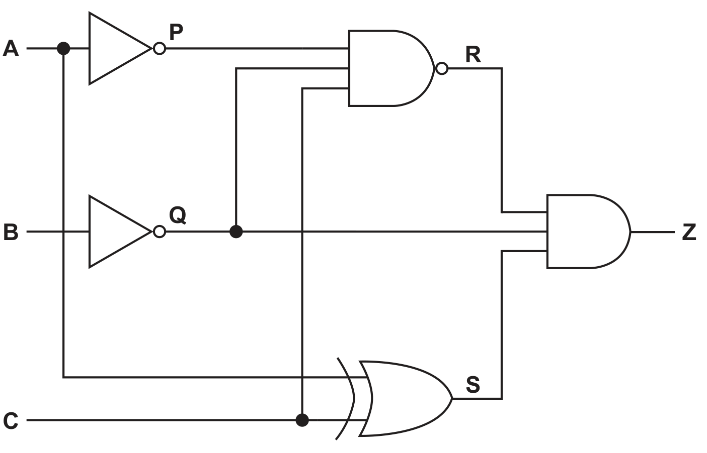
| A | B | C | P | Q | R | S | Z |
|---|---|---|---|---|---|---|---|
| 0 | 0 | 0 | |||||
| 0 | 0 | 1 | |||||
| 0 | 1 | 0 | |||||
| 0 | 1 | 1 | |||||
| 1 | 0 | 0 | |||||
| 1 | 0 | 1 | |||||
| 1 | 1 | 0 | |||||
| 1 | 1 | 1 |
(b) Describe one benefit of using a Karnaugh map (K-map) for solving logic problems. [1]
© The Karnaugh map (K-map) represents a logic circuit with four inputs.
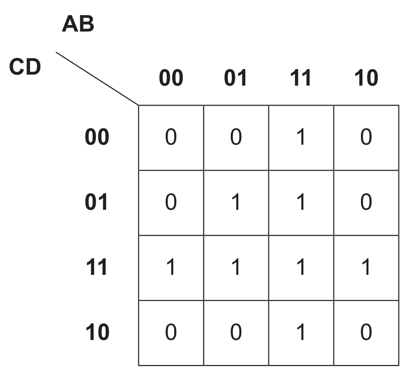
| AB\CD | 00 | 01 | 11 | 10 |
|---|---|---|---|---|
| 00 | 0 | 0 | 1 | 0 |
| 01 | 0 | 1 | 1 | 0 |
| 11 | 1 | 1 | 1 | 1 |
| 10 | 0 | 0 | 1 | 0 |
©(i) Draw loop(s) around appropriate group(s) in the K-map to produce an optimal sum-of-products. [3]
©(ii) Write the Boolean expression from your answer to 6©(i) as a simplified sum-of-products. Do not carry out any further simplification. [2]
Answer
6(a) One mark for columns P, Q and R; one mark for column S; one mark for column Z. Completed truth table shown below.
| A | B | C | P | Q | R | S | Z |
|---|---|---|---|---|---|---|---|
| 0 | 0 | 0 | 1 | 1 | 1 | 0 | 0 |
| 0 | 0 | 1 | 1 | 1 | 0 | 1 | 0 |
| 0 | 1 | 0 | 1 | 0 | 1 | 0 | 0 |
| 0 | 1 | 1 | 1 | 0 | 1 | 1 | 0 |
| 1 | 0 | 0 | 0 | 1 | 1 | 1 | 1 |
| 1 | 0 | 1 | 0 | 1 | 1 | 0 | 0 |
| 1 | 1 | 0 | 0 | 0 | 1 | 1 | 0 |
| 1 | 1 | 1 | 0 | 0 | 1 | 0 | 0 |
6(b) Solving logic expressions using a K-map makes it easier because you don’t need to use Boolean algebra. // It is guaranteed to give you an optimal solution. // Converts complex logic problems into simpler ones.
Examiner’s note (not MS): Guidance: “Makes it easier” by itself is not enough; do not allow “optimal sum-of-products” instead of “optimal solution”.
6©(i) One mark for each correct loop (Max 3).
Examiner’s note (not MS): Guidance: Max 2 if incorrect loops are seen.
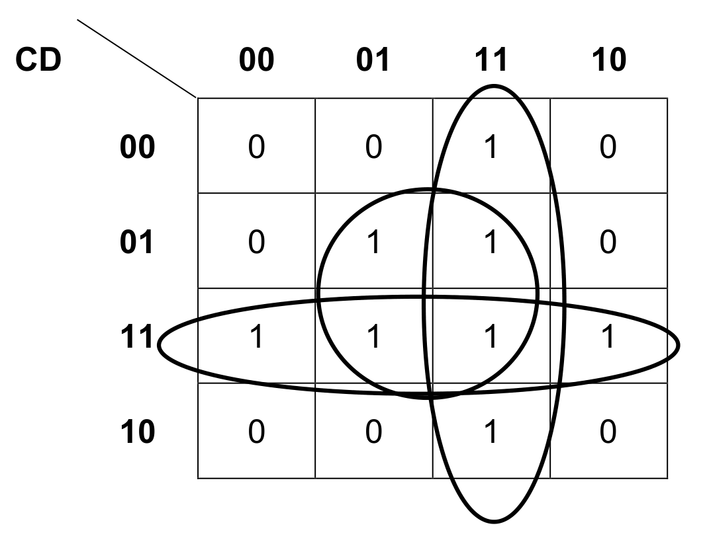
6©(ii) One mark per mark point (Max 2): MP1 One correct Boolean term with an OR (+) sign; MP2 All three correct Boolean terms connected by OR signs and no other terms present.
A.B + B.D + C.D — terms can be in any order.
This truth table represents a logic circuit.
| A | B | C | D | Z |
|---|---|---|---|---|
| 0 | 0 | 0 | 0 | 0 |
| 0 | 0 | 0 | 1 | 1 |
| 0 | 0 | 1 | 0 | 0 |
| 0 | 0 | 1 | 1 | 0 |
| 0 | 1 | 0 | 0 | 1 |
| 0 | 1 | 0 | 1 | 1 |
| 0 | 1 | 1 | 0 | 1 |
| 0 | 1 | 1 | 1 | 1 |
| 1 | 0 | 0 | 0 | 0 |
| 1 | 0 | 0 | 1 | 1 |
| 1 | 0 | 1 | 0 | 0 |
| 1 | 0 | 1 | 1 | 0 |
| 1 | 1 | 0 | 0 | 1 |
| 1 | 1 | 0 | 1 | 1 |
| 1 | 1 | 1 | 0 | 1 |
| 1 | 1 | 1 | 1 | 1 |
(a)(i) Complete the Karnaugh map (K-map) for the given truth table. [2]
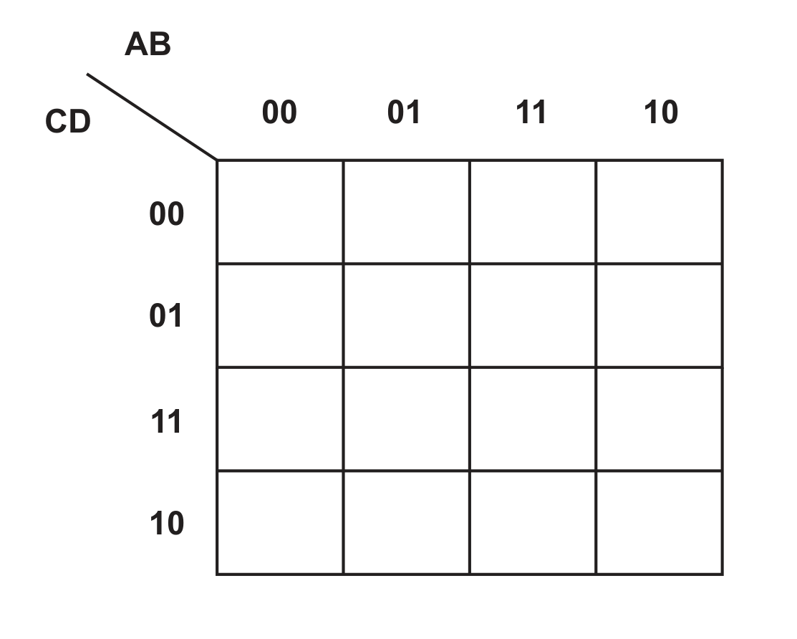
| CD \ AB | 00 | 01 | 11 | 10 |
|---|---|---|---|---|
| 00 | ||||
| 01 | ||||
| 11 | ||||
| 10 |
(a)(ii) Draw loop(s) around appropriate group(s) in the K-map to produce an optimal sum-of-products. [2]
(a)(iii) Write the Boolean expression from your answer to 7(a)(ii) as a simplified sum-of-products. [1]
(b) Simplify the following expression using De Morgan’s laws and Boolean algebra. Show all the stages in your simplification. [3]
$$X = \overline{\overline{A}.B.C.\overline{D}} + \overline{\overline{A.D}}$$
Answer
7(a)(i) Two marks if no errors present; one mark if one error present.
Examiner’s note (not MS): Guidance: 0’s must be present.

7(a)(ii) One mark for each correct loop (Max 2)

7(a)(iii) $B + \bar{C}.D$ // $\bar{C}.D + B$
Examiner’s note (not MS): Guidance: Allow products with or without dots, e.g. $\bar{C}$.D or $\bar{C}$D.
7(b) One mark for correct answer and up to two marks for correct working from the points shown.
$X = \overline{\overline{A}.B.C.\overline{D}} + \overline{\overline{A.D}}$
• De Morgan’s laws: $\bar{\bar{A}} + \bar{B} + \bar{C} + \bar{\bar{D}} + \bar{\bar{A}}.\bar{\bar{D}}$ // $\bar{\bar{A}} + \bar{B} + \bar{C} + \bar{\bar{D}} + A.D$
• Double negation law: $(X =) A + \bar{B} + \bar{C} + D + A.D$
• Absorption law — correct answer: $X = A + \bar{B} + \bar{C} + D$
Exam Question Index
Truth tables for logic circuits including half adders and full adders
| Sub-question | Exam point | Source |
|---|---|---|
| P31 Q6(a) | Complete truth table for a logic circuit | 2026 Summer P31 Q6(a) |
| P31 Q6(a) | Complete truth table for a logic circuit | 2025 Winter P31 Q6(a) |
| P32 Q6(a) | Complete truth table for a logic circuit | 2025 Winter P32 Q6(a) |
| P32 Q7(a) | Complete truth table for a logic circuit | 2025 Summer P32 Q7(a) |
| P31 Q6(a) | Complete truth table for a logic circuit | 2024 Summer P31 Q6(a) |
| P32 Q6(a) | Complete truth table for a logic circuit | 2024 Summer P32 Q6(a) |
| P31 Q6(a) | Complete truth table for a logic circuit | 2023 Winter P31 Q6(a) |
| P32 Q7(a) | Complete truth table (three-input NOT circuit) | 2023 Winter P32 Q7(a) |
| P32 Q6(a) | Complete half-adder truth table | 2022 Summer P32 Q6(a) |
| P32 Q6(b)(i) | Name the logic circuit (half adder) | 2022 Summer P32 Q6(b)(i) |
| P32 Q6(b)(ii) | Purpose of each output (Sum, Carry) | 2022 Summer P32 Q6(b)(ii) |
| P31 Q7(a) | Complete full-adder truth table | 2021 Summer P31 Q7(a) |
| P31 Q7(b) | Name the logic circuit (full adder) | 2021 Summer P31 Q7(b) |
Flip-flops (SR, JK)
| Sub-question | Exam point | Source |
|---|---|---|
| P32 Q8(a) | Draw and label an SR flip-flop circuit | 2022 Winter P32 Q8(a) |
| P32 Q8(b) | State the purpose of a flip-flop | 2022 Winter P32 Q8(b) |
Boolean algebra (De Morgan's laws)
| Sub-question | Exam point | Source |
|---|---|---|
| P33 Q6(a)(iii) | Simplest form using Boolean algebra | 2026 Summer P33 Q6(a)(iii) |
| P33 Q6(b) | Simplify using De Morgan’s laws | 2026 Summer P33 Q6(b) |
| P32 Q7(b) | Simplify using De Morgan’s laws | 2026 Summer P32 Q7(b) |
| P33 Q6(b) | Simplify using De Morgan’s laws | 2025 Winter P33 Q6(b) |
| P33 Q3(a) | Write sum-of-products from truth table | 2025 Summer P33 Q3(a) |
| P31 Q5(a) | Write sum-of-products from truth table | 2025 Summer P31 Q5(a) |
| P32 Q7(b) | Write sum-of-products from logic circuit | 2025 Summer P32 Q7(b) |
| P32 Q7© | Simplify using De Morgan’s laws | 2025 Summer P32 Q7© |
| P31 Q6(b) | Write sum-of-products from logic circuit | 2024 Summer P31 Q6(b) |
| P32 Q6(b) | Write sum-of-products from logic circuit | 2024 Summer P32 Q6(b) |
| P32 Q6(a) | Write sum-of-products from truth table | 2024 Winter P32 Q6(a) |
| P31 Q7(a) | Write sum-of-products from truth table | 2024 Winter P31 Q7(a) |
| P31 Q7(d)(ii) | Simplify SOP to simplest form | 2024 Winter P31 Q7(d)(ii) |
| P31 Q6(b) | Simplify using Boolean algebra | 2023 Winter P31 Q6(b) |
| P32 Q7(b) | Apply De Morgan’s laws | 2023 Winter P32 Q7(b) |
| P32 Q7© | Simplify using Boolean algebra | 2023 Winter P32 Q7© |
| P31 Q7(d) | Simplify SOP to simplest form | 2023 Summer P31 Q7(d) |
| P32 Q9(a) | Write sum-of-products from truth table | 2023 Summer P32 Q9(a) |
| P32 Q9(e) | Simplify SOP to simplest form | 2023 Summer P32 Q9(e) |
| P32 Q8© | Simplify using De Morgan’s laws | 2022 Winter P32 Q8© |
| P31 Q7© | Write SOP expressions and state purpose | 2021 Summer P31 Q7© |
| P31 Q7(a) | Write sum-of-products from truth table | 2021 Winter P31 Q7(a) |
| P31 Q7(b)(iv) | Simplify SOP to simplest form | 2021 Winter P31 Q7(b)(iv) |
Karnaugh maps (K-map)
| Sub-question | Exam point | Source |
|---|---|---|
| P31 Q6(b) | State a benefit of using a K-map | 2026 Summer P31 Q6(b) |
| P31 Q6©(i) | Draw loops on a K-map | 2026 Summer P31 Q6©(i) |
| P31 Q6©(ii) | Write simplified SOP from K-map | 2026 Summer P31 Q6©(ii) |
| P33 Q6(a)(i) | Draw loops on a K-map | 2026 Summer P33 Q6(a)(i) |
| P33 Q6(a)(ii) | Write simplified SOP from K-map | 2026 Summer P33 Q6(a)(ii) |
| P32 Q7(a)(i) | Complete a K-map from a truth table | 2026 Summer P32 Q7(a)(i) |
| P32 Q7(a)(ii) | Draw loops on a K-map | 2026 Summer P32 Q7(a)(ii) |
| P32 Q7(a)(iii) | Write simplified SOP from K-map | 2026 Summer P32 Q7(a)(iii) |
| P33 Q3(b)(i) | Complete a K-map from a truth table | 2025 Summer P33 Q3(b)(i) |
| P33 Q3(b)(ii) | Draw loops on a K-map | 2025 Summer P33 Q3(b)(ii) |
| P33 Q3(b)(iii) | Write simplified SOP from K-map | 2025 Summer P33 Q3(b)(iii) |
| P31 Q5(b)(i) | Complete a K-map from a truth table | 2025 Summer P31 Q5(b)(i) |
| P31 Q5(b)(ii) | Draw loops on a K-map | 2025 Summer P31 Q5(b)(ii) |
| P31 Q5(b)(iii) | Write simplified SOP from K-map | 2025 Summer P31 Q5(b)(iii) |
| P31 Q6(b)(i) | Complete a K-map from a Boolean expression | 2025 Winter P31 Q6(b)(i) |
| P31 Q6(b)(ii) | Draw loops on a K-map | 2025 Winter P31 Q6(b)(ii) |
| P31 Q6(b)(iii) | Write simplified SOP from K-map | 2025 Winter P31 Q6(b)(iii) |
| P32 Q6(b)(i) | Complete a K-map from a Boolean expression | 2025 Winter P32 Q6(b)(i) |
| P32 Q6(b)(ii) | Draw loops on a K-map | 2025 Winter P32 Q6(b)(ii) |
| P32 Q6(b)(iii) | Write simplified SOP from K-map | 2025 Winter P32 Q6(b)(iii) |
| P33 Q6(a)(i) | Draw loops on a K-map | 2025 Winter P33 Q6(a)(i) |
| P33 Q6(a)(ii) | Write simplified SOP from K-map | 2025 Winter P33 Q6(a)(ii) |
| P31 Q6©(i) | Complete a K-map from a Boolean expression | 2024 Summer P31 Q6©(i) |
| P31 Q6©(ii) | Draw loops on a K-map | 2024 Summer P31 Q6©(ii) |
| P31 Q6©(iii) | Write simplified SOP from K-map | 2024 Summer P31 Q6©(iii) |
| P32 Q6©(i) | Complete a K-map from a Boolean expression | 2024 Summer P32 Q6©(i) |
| P32 Q6©(ii) | Draw loops on a K-map | 2024 Summer P32 Q6©(ii) |
| P32 Q6©(iii) | Write simplified SOP from K-map | 2024 Summer P32 Q6©(iii) |
| P32 Q6(b) | Complete a K-map from a truth table | 2024 Winter P32 Q6(b) |
| P32 Q6© | Draw loops on a K-map | 2024 Winter P32 Q6© |
| P32 Q6(d) | Write simplified SOP from K-map | 2024 Winter P32 Q6(d) |
| P31 Q7(b) | Complete a K-map from a truth table | 2024 Winter P31 Q7(b) |
| P31 Q7© | Draw loops on a K-map | 2024 Winter P31 Q7© |
| P31 Q7(d)(i) | Write simplified SOP from K-map | 2024 Winter P31 Q7(d)(i) |
| P31 Q7(a) | Complete a K-map from a Boolean expression | 2023 Summer P31 Q7(a) |
| P31 Q7(b) | Draw loops on a K-map | 2023 Summer P31 Q7(b) |
| P31 Q7© | Write simplified SOP from K-map | 2023 Summer P31 Q7© |
| P32 Q9(b) | Complete a K-map from a truth table | 2023 Summer P32 Q9(b) |
| P32 Q9© | Draw loops on a K-map | 2023 Summer P32 Q9© |
| P32 Q9(d) | Write simplified SOP from K-map | 2023 Summer P32 Q9(d) |
| P31 Q7(a) | Complete a K-map from a Boolean expression | 2022 Winter P31 Q7(a) |
| P31 Q7(b) | Draw loops on a K-map | 2022 Winter P31 Q7(b) |
| P31 Q7© | Write simplified SOP and simplest form | 2022 Winter P31 Q7© |
| P31 Q7(b)(i) | Complete a K-map from a truth table | 2021 Winter P31 Q7(b)(i) |
| P31 Q7(b)(ii) | Draw loops on a K-map | 2021 Winter P31 Q7(b)(ii) |
| P31 Q7(b)(iii) | Write simplified SOP from K-map | 2021 Winter P31 Q7(b)(iii) |